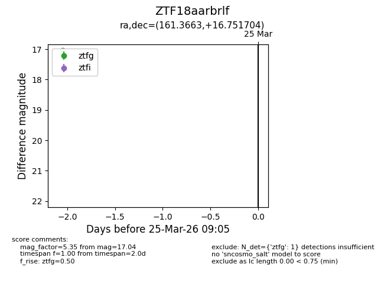
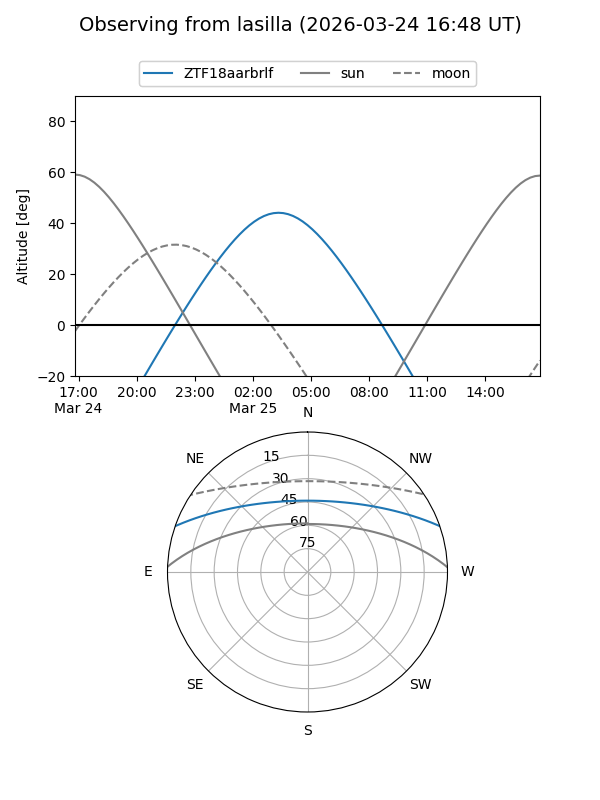
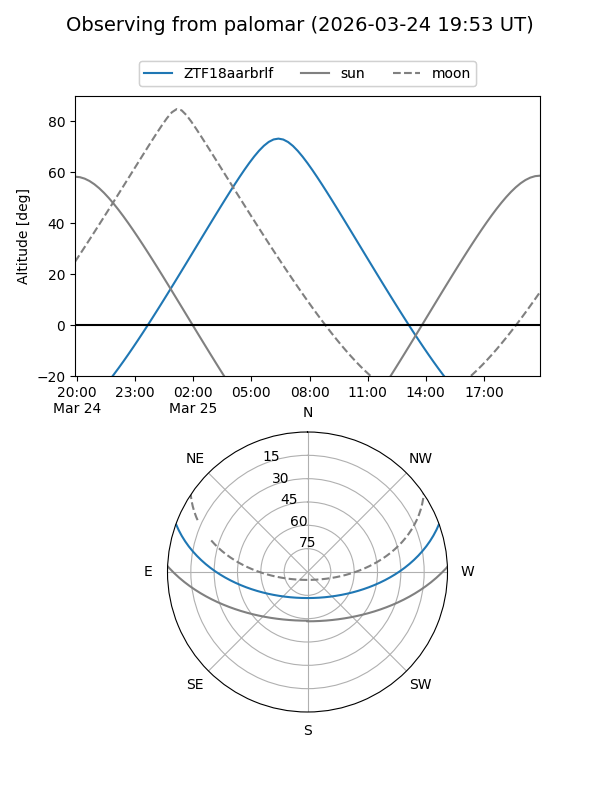

ZTF18aarbrlf
Target ZTF18aarbrlf at 2026-03-25 09:08
Aliases and brokers:
FINK: link
Lasair: link
ALeRCE: link
alt names
ZTF18aarbrlf (ztf,fink_ztf)
Coordinates:
equatorial (ra, dec) = 161.3663,+16.75170
equatorial (HMS+DMS) = 10:45:27.91,+16:45:06.14
galactic (l, b) = (225.9661,+59.10561)
Flags:
Photometry:
last ztfg=17.04
1 ztfg detections
Lightcurve

Visibility


Additional plots